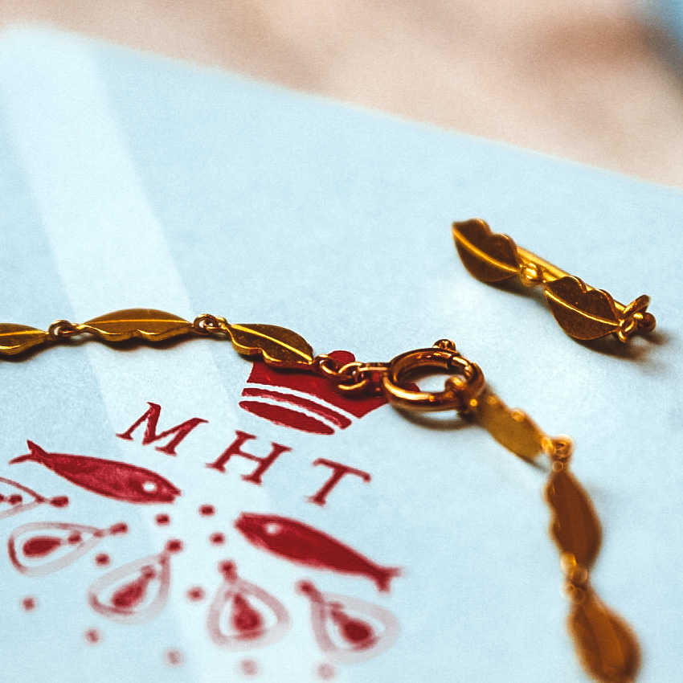
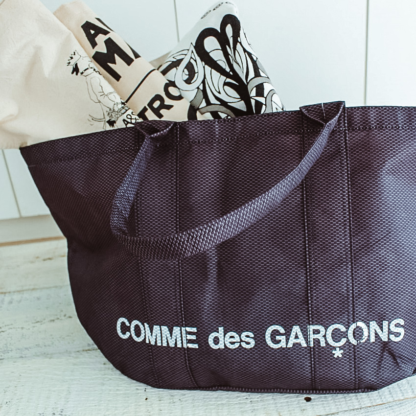

If you get a time machine
十数年前 なくなったと思っていた入手不可能なレアCD
十数年来 もう使ってないラジカセの中で発見した
そして思い出した、数々の後悔...自由設定で過去の失敗にもし戻れるとしたら、どうする?
Time machine is a dream device
この世界のどっかでタイムマシーンみたいなユメの装置を
開発しているとしてそれはすぐやめるべきだと思う

Time travel
2023年 もうちょっとすると時間旅行にいけるかも!?
でもぼくらやり直しがきく将来なんて望むかな?
あの夜消えてしまったあいつに会いたいけど
もう一度消えてしまうとこなんて見たくもない

Somewhere in the world
ひとつもウソつかず生きてみようか...
あるいはあの日の許せない言葉とあいつら消そうか...
もし世界のどっかでタイムマシーンみたいなユメの装置が
完成したとしてはやいとこぶち壊すべきだろう